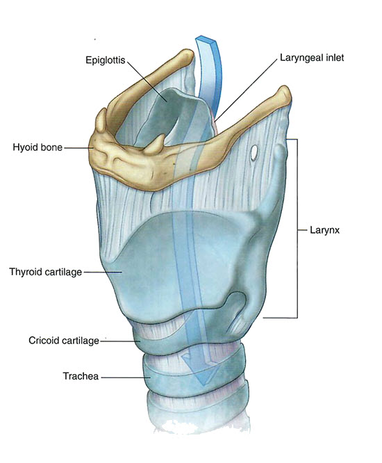

Pharynx and Larynx: Module 2 - Page 2 of 8
×

The following cartilages, their membranes and the hyoid bone form the covering for the larynx
|  |
| 🔍 Cartilages |
| Add the trachea. | |
| Add the cricoid cartilage. | |
| Add the arytenoid cartilages. | |
| Add the corniculate cartilages. | |
| These last two structures are covered by the thyroid cartilage. | |
| Add the hyoid bone. |
| Compare the structures in the 3D panel to the drawing. Note that connective tissue connects all these structures but the connective tissue is not visable in the 3D representation. |